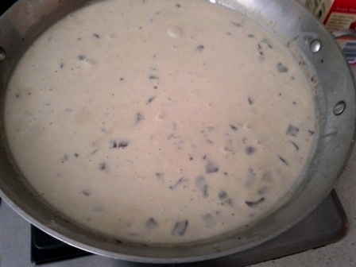

Fresh Green Bean Casserole Recipe
I can’t believe several decades of my life flew by before I tried a fresh green bean casserole recipe. This dish, well the processed ancestor of it, is a tradition in my family. I never even liked it because a) I was afraid of what was in it, and b) unless I know what’s in it, I don’t tend to go for creamy casseroles that often.
So when I suggested making green bean casserole from scratch last Christmas suffice it to say I received a protest or two. Okay, I get it. Certain foods just become part of the holiday celebration and to not have them would be sacrilegious. I understand that.
That’s why it almost became a dare that I could make a homemade version of this traditional fare. But I didn’t just want to make fresh green bean casserole, I wanted to come up with a green bean casserole recipe that would outdo the processed kind that my family members were so attached to.
Did I succeed? To quote good ol’ Sarah Palin, “You betcha!”. My aunt, the primary protester and traditional bringer of this casserole to our family feasts, admitted my homemade version was pretty freaking awesome. (Paraphrasing here, of course.)
So if you or your family members love this great American classic I encourage you to wean them off the processed chemicals and give this fresh green bean casserole recipe a try. If my family wasn’t disappointed, yours definitely won’t be.
Ingredients
- 2 lbs. green beans
- 1 8oz. package of baby bella mushrooms (feel free to use more if you like the mushroomy taste)
- 2 shallots (golf ball size)
- 1 red onion
- 2 cups of cream
- 2 cups vegetable broth
- 1 cup gruyere cheese
- 1 cup of regular bread crumbs
- 1 cup fried onion straws
- 4 T all-purpose flour
- butter for sauteing vegetables
- 5 cloves of garlic
- ½ tsp nutmeg
- 1 tsp salt, 1 tsp pepper
Directions
- Preparation:
- Clean and peel the ends off of the green beans.
- Wash and dry the mushrooms, chop into small chunks
- Chop shallots
- Slice red onion
- Mince garlic cloves
- Grate gruyere cheese
- Blanch your green beans: Prepare a big bowl full of cold water with ice cubes. Bring a pot of water to a boil. Carefully place your green beans in the boiling water for 2 minutes, they should be bright green by the end. Quickly strain the green beans in a colander, run them under cool water and then dunk them in the ice bath to stop them from cooking any further. Once completely cool, transfer to collander to drain and dry. Set aside.
- Fry your red onions: In a large saute pan, melt 2 T of butter until it begins to bubble, then add your sliced red onion. Let them cook until softened and slightly brown. When they are done, put them in a bowl and toss loosely with 1 cup bread crumbs. Set aside.
- Preheat oven to 425°
- Make the sauce of your casserole:
- In large saute pan, melt another 2 T of butter until it begins to bubble. Saute your diced mushrooms, shallots and minced garlic for about 10-15 minutes. Add salt, pepper, nutmeg all-purpose flour, stir until combined.
- Deglaze pan with 2 cups vegetable broth. Add the liquid then scrape the browned bits from the bottom of your pan. Once finished, slowly pour in cream, stirring as you pour until combined. Reduce on medium/low heat for 25 minutes. Sauce should become thicker but still remain liquid.
- Fold in gruyere cheese.
- Put your dry, blanched green beans into a casserole dish. Pour sauce over top and make sure it’s evenly distributed. Bake covered in aluminum foil for 10 minutes.
- Remove casserole from oven, uncover and top with fried red onions. Add a layer of fried onion straws for extra crunch (or if your family is nostalgic about the processed version of green bean casserole). Bake uncovered for another 10-15 minutes. The sauce will be thick and bubbling slightly and the onions will begin to get dark when it’s done.
Photo Guide: making fresh green bean casserole
Here are the step by step instructions in pictures. Whenever I attempt a new dish (or revisit one I haven’t made in a while) it always helps me to see the steps in visual form. I know the instructions for this fresh green bean casserole recipe seem long and involved but hopefully these pictures will clarify any confusion.
|
 |
 |
Phew! There you have it folks! Photos every step of the way :D! Hope that clarifies any confusion!

Hello! My name is Rebecca. Food is fun and being healthy can be delicious. These two principles guide the plant-based, vegan recipes I make and share on Veritably Veg. Check out my About page to learn more about me. Welcome! From my kitchen to yours, cheers.
Sponsored Ad